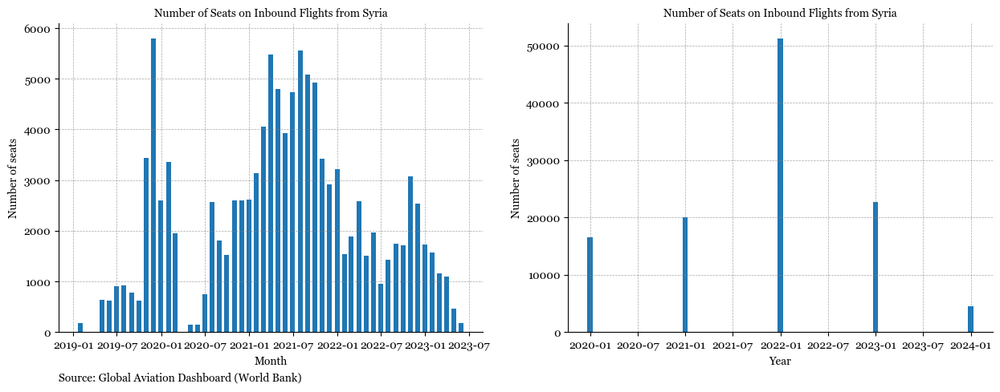
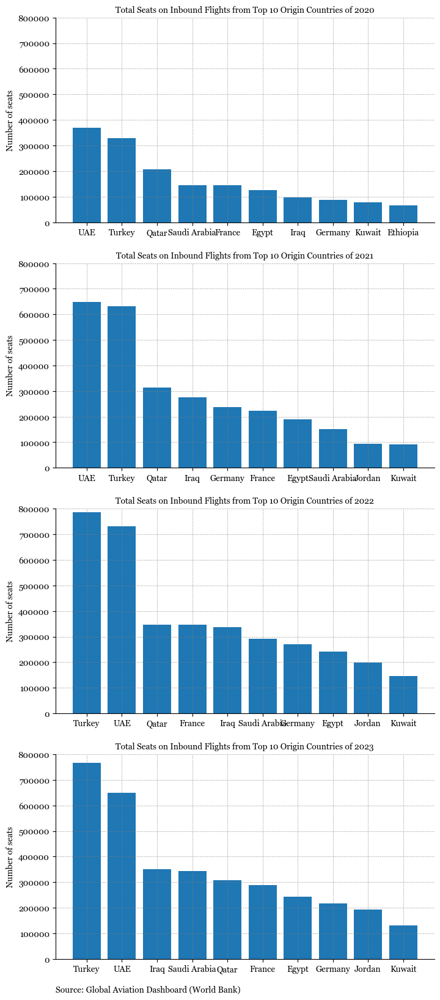
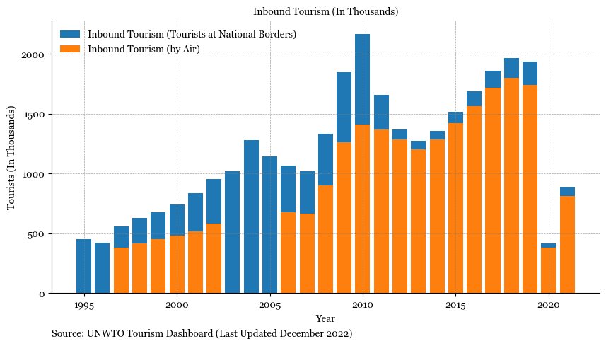
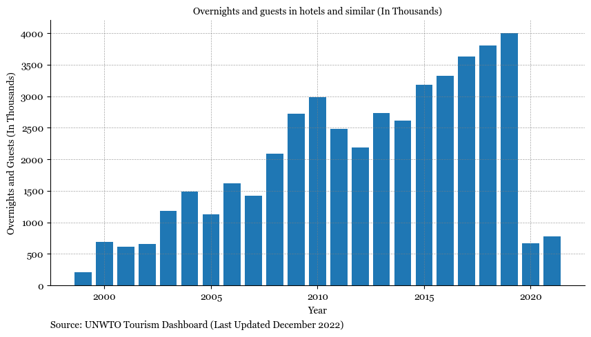

Tourism and Air Travel in Lebanon#
Data#
UNWTO
Global Aviation Dashboard
Methodology#
Limitations#
Findings#
Show code cell source
fig, axs = plt.subplots(1,2, figsize = (15,5))
plt.rcParams["font.family"] = "Georgia"
# inbound_tourism.plot(ax=ax, label = 'Inbound Tourism')
# inbound_tourism_by_air.plot(ax=ax)
axs[0].bar(x=inbound_flights_monthly['date'], height = inbound_flights_monthly['total_seats'], width = 20)
axs[1].bar(x=inbound_flights_yearly['date'], height = inbound_flights_yearly['total_seats'], width = 20)
#legend_without_title = ax.legend(title=None, loc='upper left', frameon=False)
for ax in axs:
# Hide the right and top spines (axis lines)
ax.spines['right'].set_visible(False)
ax.spines['top'].set_visible(False)
# Only show ticks on the left and bottom spines
ax.yaxis.set_ticks_position('left')
ax.xaxis.set_ticks_position('bottom')
ax.grid(which='both', linestyle='--', linewidth=0.5, color='gray', alpha=0.7)
ax.set_title('Number of Seats on Inbound Flights from Syria', font = 'Georgia')
axs[0].set_xlabel('Month')
axs[1].set_xlabel('Year')
ax.set_ylabel('Number of seats')
subtitle = 'Source: Global Aviation Dashboard (World Bank)'
axs[0].text(0, -0.15, subtitle, ha='left', va='center', transform=axs[0].transAxes,
fontsize=10, color='black', weight='normal');

Show code cell source
fig, axs = plt.subplots(4,1,figsize = (8,20))
ax = axs.flatten()
for idx, year in enumerate(range(2020,2024,1)):
df = inbound_flights_mena_yearly[inbound_flights_mena_yearly['date'].dt.year==year].sort_values(by='total_seats', ascending = False).head(10)
df['origin_country'].replace({'United Arab Emirates (the)':'UAE'}, inplace=True)
ax[idx].bar(df['origin_country'], df['total_seats'] )
ax[idx].set_ylim(top=800000)
# Hide the right and top spines (axis lines)
ax[idx].spines['right'].set_visible(False)
ax[idx].spines['top'].set_visible(False)
# Only show ticks on the left and bottom spines
ax[idx].yaxis.set_ticks_position('left')
ax[idx].xaxis.set_ticks_position('bottom')
ax[idx].grid(which='both', linestyle='--', linewidth=0.5, color='gray', alpha=0.7)
ax[idx].set_title(f'Total Seats on Inbound Flights from Top 10 Origin Countries of {year}', font = 'Georgia')
# ax[2].set_xlabel('Origin Country')
# ax[3].set_xlabel('Origin Country')
ax[idx].set_ylabel('Number of seats')
subtitle = 'Source: Global Aviation Dashboard (World Bank)'
ax[3].text(0, -0.15, subtitle, ha='left', va='center', transform=ax[3].transAxes,
fontsize=10, color='black', weight='normal');

Show code cell source
fig, ax = plt.subplots(figsize = (10,5))
plt.rcParams["font.family"] = "Georgia"
# inbound_tourism.plot(ax=ax, label = 'Inbound Tourism')
# inbound_tourism_by_air.plot(ax=ax)
ax.bar(x=inbound_tourism.index, height = inbound_tourism['Inbound Tourism (Total)'], label = 'Inbound Tourism (Tourists at National Borders)')
ax.bar(x=inbound_tourism_by_air.index, height = inbound_tourism_by_air['Inbound Tourism (by Air)'], label = 'Inbound Tourism (by Air)')
legend_without_title = ax.legend(title=None, loc='upper left', frameon=False)
# Hide the right and top spines (axis lines)
ax.spines['right'].set_visible(False)
ax.spines['top'].set_visible(False)
# Only show ticks on the left and bottom spines
ax.yaxis.set_ticks_position('left')
ax.xaxis.set_ticks_position('bottom')
ax.grid(which='both', linestyle='--', linewidth=0.5, color='gray', alpha=0.7)
ax.set_title('Inbound Tourism (In Thousands)', font = 'Georgia')
ax.set_xlabel('Year')
ax.set_ylabel('Tourists (In Thousands)')
subtitle = 'Source: UNWTO Tourism Dashboard (Last Updated December 2022)'
ax.text(0, -0.15, subtitle, ha='left', va='center', transform=ax.transAxes,
fontsize=10, color='black', weight='normal');

Show code cell source
fig, ax = plt.subplots(figsize = (10,5))
plt.rcParams["font.family"] = "Georgia"
# inbound_tourism.plot(ax=ax, label = 'Inbound Tourism')
# inbound_tourism_by_air.plot(ax=ax)
ax.bar(x=hotel_occupancy['Year'], height = hotel_occupancy['Total Accommodation'])
#legend_without_title = ax.legend(title=None, loc='upper left', frameon=False)
# Hide the right and top spines (axis lines)
ax.spines['right'].set_visible(False)
ax.spines['top'].set_visible(False)
# Only show ticks on the left and bottom spines
ax.yaxis.set_ticks_position('left')
ax.xaxis.set_ticks_position('bottom')
ax.grid(which='both', linestyle='--', linewidth=0.5, color='gray', alpha=0.7)
ax.set_title('Overnights and guests in hotels and similar (In Thousands)', font = 'Georgia')
ax.set_xlabel('Year')
ax.set_ylabel('Overnights and Guests (In Thousands)');
subtitle = 'Source: UNWTO Tourism Dashboard (Last Updated December 2022)'
ax.text(0, -0.15, subtitle, ha='left', va='center', transform=ax.transAxes,
fontsize=10, color='black', weight='normal');
